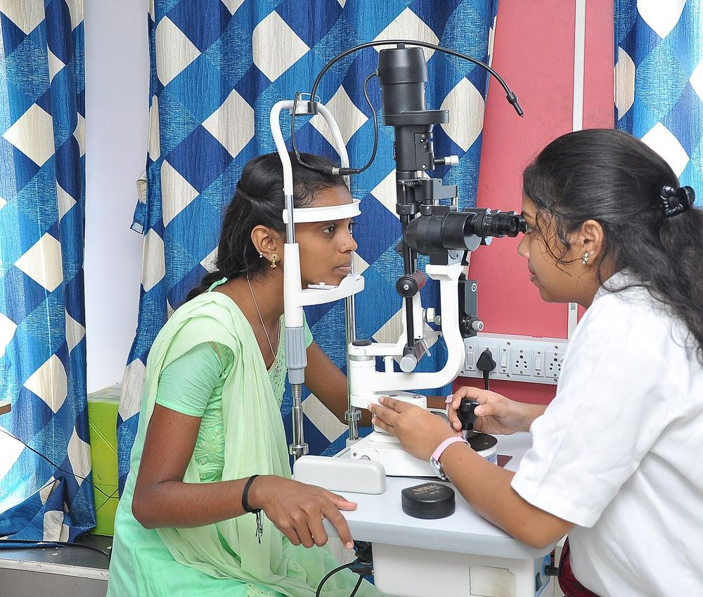
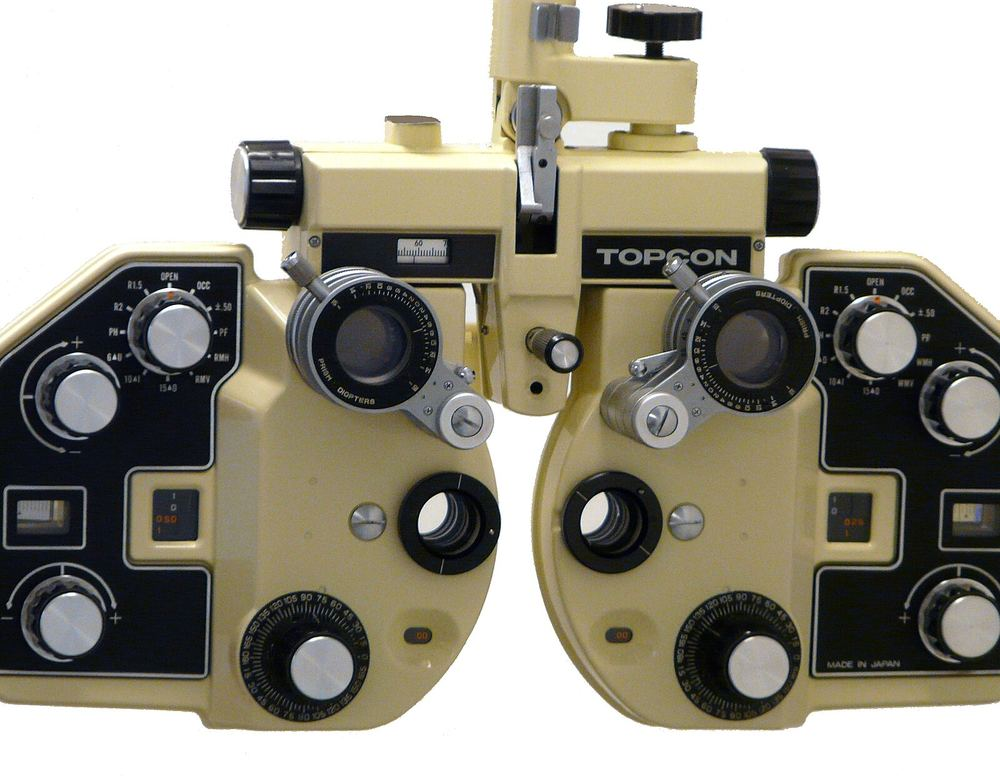
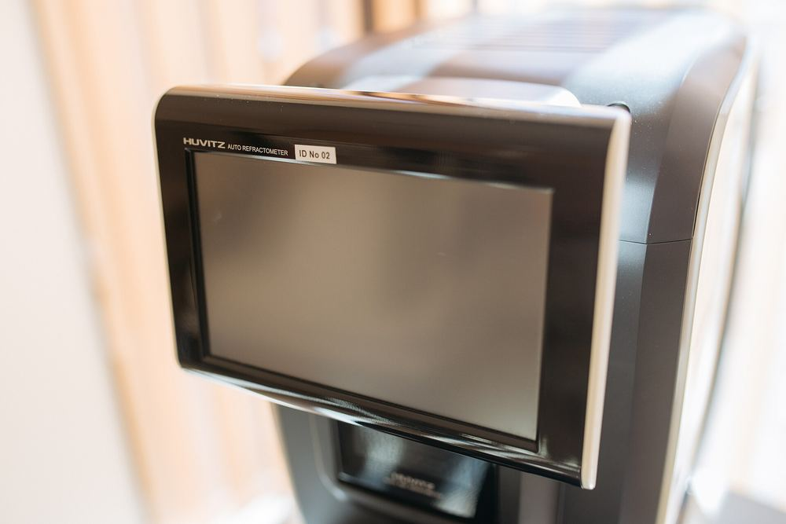
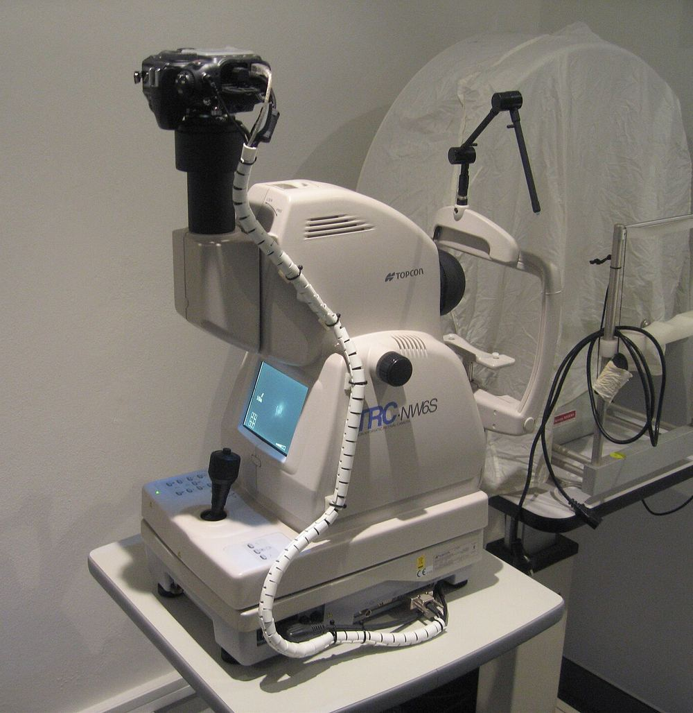
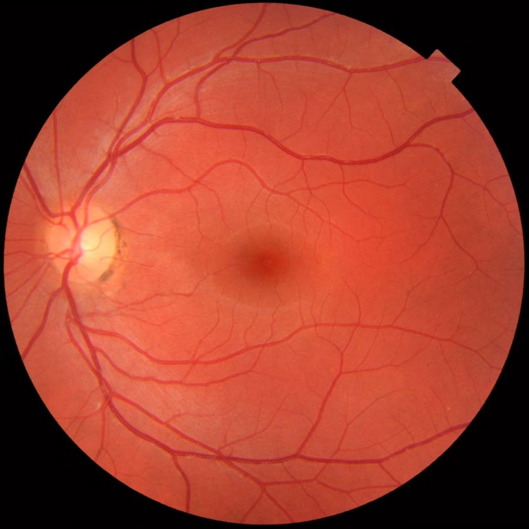
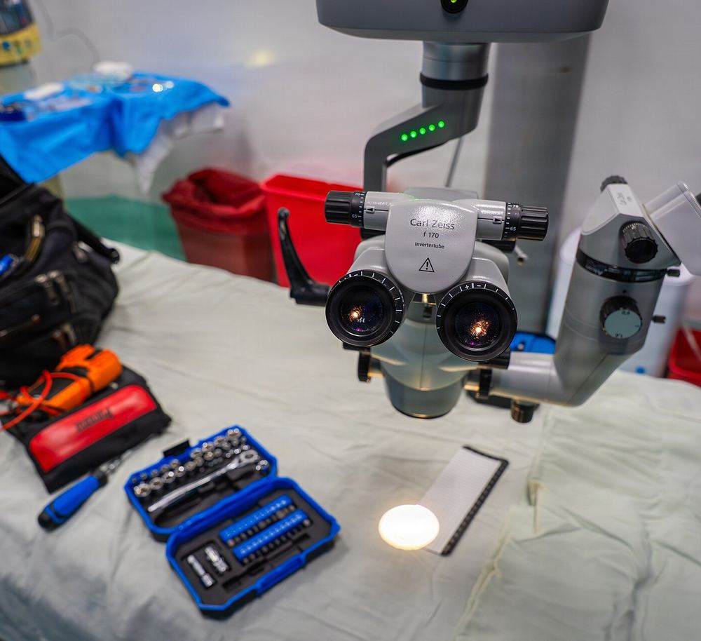

Cataract surgery
Clear, bright vision again
Modern microscope-guided surgery to replace a clouded lens with a clear one, planned around how you read, drive and live.
Dr Kartikeya Sangal, MBBS, MS Ophthalmology
Gold medalist ophthalmologist and eye surgeon with over 25 years of experience in cataract, LASIK, glaucoma, retina and cornea care, practising at leading Apollo hospitals in Delhi.
Rated 4.9 on Google Maps. Read patient reviewsFrom a first check-up to advanced surgery, Dr Sangal guides you through each decision with clear explanations and honest advice.
Modern microscope-guided surgery to replace a clouded lens with a clear one, planned around how you read, drive and live.
Careful assessment first, then LASIK, PRK or the right lenses. You are told plainly which option suits your eyes.
Early detection and ongoing care for glaucoma, diabetic eye disease and retinal conditions, including surgery when needed.
Dr Sangal trained at Maharani Laxmi Bai Medical College, Jhansi, graduating MBBS in 1996 and completing his MS in Ophthalmology in 2000, where he was a gold medalist.
Read his storyAccurate diagnosis and gentle, exact surgery depend on modern examination and operating equipment.

A microscope with a fine beam of light for a magnified look at the cornea, lens and the front of the eye. The heart of every eye examination.

Lets the right lens power be chosen with your feedback, lens by lens, so your glasses prescription is precise.

A quick, automatic first reading of your eye’s focusing power and the curve of the cornea.

Takes detailed pictures of the retina at the back of the eye, so diabetic and age-related changes can be seen early and tracked over time.

A healthy retina photograph shows the optic nerve, blood vessels and the macula, the area that gives sharp central vision.

High-magnification, brightly lit views let surgery on the lens, cornea and retina be done with great precision.
Photographs illustrate the type of equipment used in modern eye care. Image credits are listed at the foot of the page.
“A caring, skilled professional, dedicated to simplifying what is often a very complicated and confusing area of health care.”Dr Kartikeya Sangal, describing his approach
What people say about Dr Sangal, shared with their permission.
“Throughout the process Dr Sangal was very communicative and kept my daughter very calm.”
I got my daughter’s LASIK procedure done by Dr Sangal. Throughout the process Dr Sangal was very communicative and kept my daughter very calm. Speaking to her all the time, guiding her, briefing her about all the steps.
Google review, on Google Maps
“He explains every step in plain language, so I always leave knowing exactly what comes next.”
Dr Sangal takes the time to explain every step in plain language. I always leave his clinic knowing exactly what is happening with my eyes and what comes next. Careful, patient and genuinely kind.
Shared with permission
“Calm, thorough and completely honest. He recommends only what is truly needed.”
Calm, thorough and completely honest, Dr Sangal recommends only what is truly needed and never rushes you. I would trust him with my own family’s eyes without a second thought.
Shared with permission
“Good eye care begins with listening, and ends with a patient who understands.”
Dr Kartikeya Sangal has spent more than two and a half decades caring for eyes, from routine check-ups to complex surgery. He trained at MLB Medical College, Jhansi, where he earned a gold medal, and has since served patients across Delhi, including at Dr Sangal’s Eye Care Mission in Preet Vihar and at Apollo hospitals.
His practice covers the full range of ophthalmology: cataract, LASIK, glaucoma, retina, cornea, squint, eyelid surgery and everyday eye health for adults and children. He consults in English and Hindi.
Read more about Dr SangalWatch Dr Sangal talk through what good eye care means, in his own words.
A calm, clear process from your first call to your follow-up.
Choose a slot online, send a request or message us on WhatsApp. The team confirms by phone.
Your vision, eye pressure and the front and back of your eyes are checked with modern equipment.
Dr Sangal shows you what he sees, explains your options in plain language and answers every question.
Medicines, glasses, laser or surgery where needed, with careful follow-up so you recover well.
Consultations and surgery across South and East Delhi, each with easy metro access.
Hospital helpline: 1860 500 1066
Straight answers before you visit.
Bring any previous prescriptions, spectacles or contact lenses you use, a list of your medicines and any earlier eye reports or scans. If you have diabetes or high blood pressure, bring your recent test results too. Plan for a longer visit if you may need your pupils dilated, and arrange for someone to travel with you because vision can be blurred for a few hours afterwards.
A cataract is a clouding of the eye’s natural lens. It is time to talk about surgery when blurred or dim vision starts to get in the way of reading, driving or everyday tasks. Dr Sangal examines the eye, explains what he finds and recommends surgery only when it will help you.
Suitability depends on your prescription, the shape and thickness of your cornea, the health of your eyes and how stable your vision has been. A detailed assessment comes first. If LASIK is not right for you, there are other options such as PRK, and you will be told plainly.
Adults with no symptoms benefit from a check-up every one to two years. Come more often if you have diabetes, glaucoma in the family, high spectacle numbers or are over 40. Children should have an eye check before school age, and sooner if you notice squinting, tilting of the head or sitting very close to screens.
Sudden loss or dimming of vision, a curtain or shadow across your sight, new flashes or a shower of floaters, severe eye pain, a chemical splash or an eye injury need urgent assessment. Go to an emergency department or call the clinic immediately rather than waiting for a routine appointment.
Choose a slot on the booking calendar, send the request form, or message the clinic on WhatsApp at +91 98993 52267. Our team will confirm the time by phone and can reschedule if your plans change.
Send a request and the clinic team will call to confirm a time that suits you. Prefer to talk straight away? Message on WhatsApp or choose a slot on the booking calendar.
Over 25 years of experience, a gold medal in ophthalmology and a reputation for explaining everything clearly. Book your visit with Dr Sangal today.